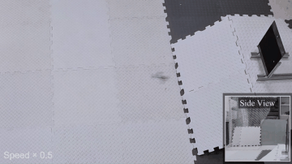
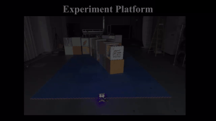
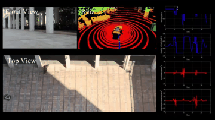
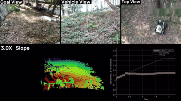

About me
I am currently pursuing an M.Eng. degree at Harbin Institute of Technology, Shenzhen (HITSZ), supervised by Prof. Jie Mei. I received my B.Eng. from HITSZ in 2024.
During my undergraduate study, I received multiple national-level competition awards and served as an assistant manager at the HITSZ Electronic Innovation and Design Community (HITSZ-EIDC), where I assisted with laboratory management and provided technical support for laser cutting, 3D printing, and embedded systems development.
In October 2021, I started my research journey at Tsinghua Shenzhen International Graduate School (SIGS), where I worked on UGV navigation and motion control as an undergraduate researcher. This experience led to multiple research publications, including a co-first-author paper.
Since September 2024, I have been a visiting researcher at STAR Robotics Lab, Southern University of Science and Technology, advised by Prof. Boyu Zhou. My research focuses on autonomous robotics, with an emphasis on autonomous exploration, motion planning, and reinforcement learning control for UAVs.
My broader research interests include:
- Active Reconstruction
- Humanoid Robotics
- Vision-Language Navigation
I am actively seeking internship and full-time opportunities in industry. You can reach me at luzong2001@gmail.com or 24S153053@stu.hit.edu.cn.
{kind=link}
📝 Publications
(* stands for equal contribution, † stands for corresponding authors)

Zihong Lu*, Zongzhuo Liu*, Huaxu Li, Jinqiang Cui, Jie Mei, Youmin Gong, U Kei Cheang, and Boyu Zhou†
Under review, Conference on Robot Learning (CoRL), 2026.

Chenxin Yu*, Zihong Lu*, Jie Mei, and Boyu Zhou†
IEEE/RSJ International Conference on Intelligent Robots and Systems (IROS), 2025.

Zhuozhu Jian*, Zihong Yan*, Xuanang Lei, Zihong Lu, Bin Lan†, Xueqian Wang†, and Bin Liang
IEEE International Conference on Robotics and Automation (ICRA), 2023.

Zhuozhu Jian*, Zihong Lu*, Xiao Zhou, Bin Lan, Anxing Xiao, Xueqian Wang†, and Bin Liang
IEEE/RSJ International Conference on Intelligent Robots and Systems (IROS), 2022.
🏆 Selected Awards
- RoboMaster 2023-2024 University AI Challenge Competition
Third Winner, 2024 - The 13th Lanqiao Cup Electronics Competition, MCU Design and Development Track
National Second Prize, 2022 - National Undergraduate Electronics Design Contest
National First Prize, 2021 - National College Student Engineering Practice and Innovation Ability Competition
National Silver Award, 2021
📖 Academic Services
- Journal Reviewer: RA-L, T-RO
- Conference Reviewer: CoRL
💻 Experience
- STARLab, Southern University of Science and Technology
Research Assistant; Advised by Prof. Boyu Zhou
2024.09 - Present - MASLab, Harbin Institute of Technology, Shenzhen
M.Eng. Student; Supervised by Prof. Jie Mei
2024.07 - Present - Tsinghua Shenzhen International Graduate School (SIGS)
Undergraduate Researcher
2021.10 - 2022.03 - HITSZ-EIDC, Harbin Institute of Technology, Shenzhen
Assistant Manager
2021.12 - 2025.04